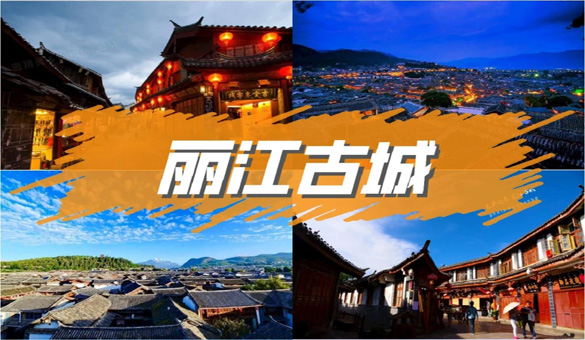
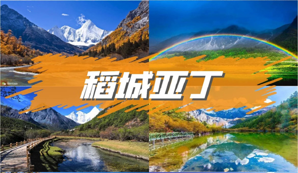
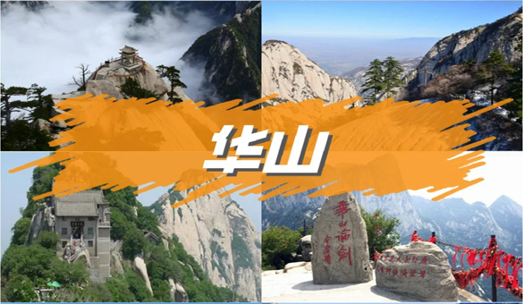
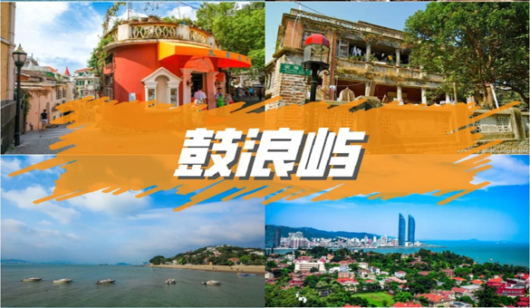
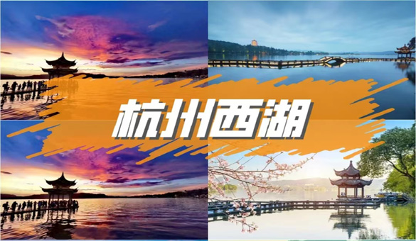

- 
-
1
丽江古城又名大研镇，是茶马古道上有名的城镇之一，影视剧《一米阳光》、《木府风云》等都在此取过景。古城内木楼青瓦，古街石巷，小桥流水，站在古城东大街上，举头即可遥望玉龙雪山，景色十分秀丽。 丽江古城依山而建，街巷依水流而设，曾经是茶马古道的交易市场。古城内从四方街延伸出光义街、七一街、五一街和新华街四条主干道，四条路又衍生出纵横交错的街巷，构成了以四方街为中心的古城。当年被徐霞客盛赞的木土司王府木府，就位于七一街关门口附近，在这里可以感受纳西民族建筑的内涵。 玉河水在城中一分为三，三分成九，再分成无数条水渠，形成主街傍河、小巷临渠的局面，使得古城充满生机。古城里遍布经营各地特产的店铺，有民族饰品、茶叶、银器、披肩等。此外，这里有众多餐馆，无论是本地风味，还是西餐披萨，一切都能让你大饱口福。
TOP 1
TOP 2
-
2
凤凰古城位于湖南省湘西的西南部。古城建于清康熙时期，因沈从文的小说《边城》而闻名于世。 古城依山傍水，沱江穿城而过，红色砂岩砌成的城墙伫立在岸边，南华山衬着清朝年间的城楼。古城里北城门下的河面上，横着一条窄窄的木桥，以石为墩，是当年出城的通道。城内的青石板街道、沱江边的吊脚楼、众多的古建筑以及浓厚的风情，构成了独具一格的湘西韵味，主要景点有沈从文故居、古城博物馆、崇德堂等，值得游览。凤凰古城曾经红红火火、曾经沸沸扬扬，这里景色是别致优雅的，有山有水的地方自然有神韵，南方的古镇古城基本上都依山傍水，凤凰城靠着沱江，形成了更加美丽的风景线。凤凰古城的景点有二十多处，很多文化人来这里都会想到沈从文，沈从文的墓就在真理，凤凰城的出名一定程度上也与沈从文的文章有关。到这里需要有足够的时间去品味和欣赏每个景点的特色。
TOP 3
- 
-
3
稻城亚丁，即亚丁自然保护区，也称亚丁景区，位于甘孜州稻城县南部，主要由“仙乃日、央迈勇、夏诺多吉”三座神山和周围的河流、湖泊和高山草甸组成，是中国保存较为完整的一处自然生态系统。 因其独特的地貌和原生态的自然风光，有人称其为蓝色星球上的仅存的一片净土。稻城亚丁景色优美,事实上也确实如此,五色海、牛奶海、珍珠海、洛绒牛场、冲古草原、央迈勇、仙乃日、夏诺多吉,这里是蓝色星球上的最后一片净土,这里是传说中消失的地平线,这里有着人们对于香格里拉最美好的向往。陈末形容稻城的台词：我偷偷的告诉你，有一个地方叫做稻城，我要和我最心爱的人一起去哪里，看蔚蓝的天空，看白色的雪山，看金色的草地，看一场秋天的童话。我要告诉她，如果没有住在你的心里，都是客死他乡！我要告诉她，相爱这件事情，就是永远在一起。
TOP 4
-
4
茶卡盐湖是一座有三千多年历史的盐场，湖水含盐量很大，会自然结晶成为一片白色的湖面，将天空、云朵和对岸的山都倒映在湖里，景色非常漂亮。游客还可以赤脚走到湖面上观看和拍摄自己的倒影，犹如天空之境。 茶卡盐湖在晴天时湖水结晶度很高，可以看到洁白的盐湖上覆盖一层薄薄的卤水，景色和倒影清晰又纯净。在景区雕塑区你可以看到石雕的盐湖守护女神，除了该雕塑外，其它约十几座巨大的雕塑都是盐雕，有弥勒佛、成吉思汗等造型。 沿着通道走到湖边，就可以看到洁白纯净的茶卡盐湖，在这里可以脱了鞋子赤脚走进湖里，尽情游玩。湖中间有一条铁路延伸至湖内，起点处便是乘坐小火车的地方，可以乘车前往湖内深处，那里的景色更为纯净。
TOP 5
-
5
小学语文课本有篇“桂林山水甲天下”指的就是游漓江。漓江的两岸山峰伟岸挺拔，形态万千，是桂林风光的精华。“百里漓江，百里画廊”，每一处景致都是一幅典型的中国水墨画，漓江景区青峰夹岸，绿水萦洄，峡谷峭壁，悬泉飞瀑，绿洲险滩，奇洞美石，景致万千，沿江分布着几十处知名的景点：乌桕滩、九牛三洲、蝙蝠山、望夫石、草坪风光、冠岩、绣山、半边奇渡、仙人推磨、杨堤风光、鲤鱼挂壁、浪石奇观、下龙湾、鸡笼山、八仙过江、五指山、乌龟爬山、九马画山、黄布倒影（20元人民币背景）、骆驼过江、朝板山、兴坪佳境、螺狮山、渔村、龙头山等等。 一般游漓江的主要方式有坐船、竹筏及徒步，包括漓江三星、四星游船，漓江竹筏游和兴坪渔村大船游等。桂林漓江风景区是指从桂林到阳朔漓江水路的83公里沿途两岸的风光。 桂林漓江风景区有很多景点。 主要景区：一河“漓江”，两个洞穴”芦笛岩，七星岩，三山“独秀峰，伏波山和叠彩山”。 在热闹的游乐园后面，有一个幽静，和平和鸟语花香的灵湖风景区。 除夕夜，桂林香鼻山下流光满面，水舞台与漓江融为一体。丽江两岸灯光变幻了四个季节的风光。 该地区有古木参天，红枫诱人；藤树，树藤和野趣横生，景色秀丽，鸟语花香，空气清新。 众所周知的是南运河，全长33.15公里，使用天然水道仅挖了5公里，现在不再使用灵渠，但稀有地可以看到昔日的景象，淡季期间游客少，更加宁静古朴。 展望远方群山，村庄里满是烟雾，永不横贯的霓虹灯笼罩着房屋。 “没有蝴蝶山顶，我不知道阳朔的景象”。 登顶的那一刻，会有一种清晰而令人发叹的感觉连绵的山脉，蜿蜒的漓江和广阔的蓝天。 在河中漫步的竹排，看着两旁山上的凉风习俗，回到了耳边不禁唱歌的一首童话。 经过多年的闲暇时间，一条老街的历史叙述了几代人的故事冲刷阳朔西大街仍然以其独特的魅力散发着迷人的光芒来接待全国各地的游客甚至欧美背包客。 河水适中，适合泛舟漓江。 桂林-兴坪Day2，相公山-九马画山-星平古镇-漓江渔火-乌龙泉”和丽江钓鱼。坐在索道缆车上金佛顶，去当地地道的红瑶族品尝特色食品。 相信你们都是一时唱得看到数千山万水，穿越天空南北，不要错过漓江的风景
TOP 6
- 
-
6
华山古称“西岳”，为中国有名的五岳之一，位于陕西省华阴市境内。华山又有“太华山”的雅称，是中华文明的发祥地，“中华”和“华夏”之“华”，就源于华山。“奇险”两字是华山风光的精髓。“自古华山一条道”形容的就是华山的险峻，景区有长空栈道、鹞子翻身以及在峭壁绝崖上凿出的千尺幢、百尺峡、老君犁沟等多处惊险刺激的景点，亲临其境者，无不叹为观止。 华山景区面积辽阔，包括主峰景区、西岳庙景区、仙峪景区等。其中主峰景区是华山的核心景区，包括“华山一条路”和东南西北中五大主峰。大多数人心中的华山，指的就是主峰景区。华山有名的景区多达210余处，从古至今，无数文人墨客在此留下各种经典诗词。 长空栈道 长空栈道位于华山南峰东侧山腰上，是华山派宗师——元代贺志真道长为远离尘世静修成仙，在悬崖绝壁上镶嵌石桩，铺上木板而成。走到栈道尽头，能够看到贺掌门修身的“贺祖洞”。修路者在峭壁上凿出石孔，孔中楔进石桩，石桩之间铺上宽约40厘米的木板，游客通过这里，必须身贴崖壁，手拉铁链，脚踏木板，侧身缓慢向前移动。
TOP 7
- 
-
7
鼓浪屿是一个宁静美丽的小岛，凭借其独特的景色，已然成为厦门名副其实的旅游名片。岛上有日光岩、菽庄花园、风琴博物馆等景点，在日光岩内，可以俯视全岛，将景色尽收眼底。 除此之外，鼓浪屿上还有闽南建筑风格的海天堂构、中完合壁的八卦楼以及19世纪欧陆风格的国家领事馆，因为这些多种风格的建筑，所以又有万国建筑博览之称。众所周知，鼓浪屿遍地漂亮洋楼，被誉为“万国建筑的汇集地”。这些小洋楼是怎么来的呢？想弄清楚这一点，就要追溯厦门和鼓浪屿的前世今生。历史上，厦门本来只是一个夹在泉州和漳州之间不知名的小岛，因为盛产一种叫嘉禾的稻谷，被叫作嘉禾里。 明朝时期，因为海盗骚扰，为了确保安全，明朝政府沿海建立了卫所。 1387年，在岛上修建城墙，设立关卡，取名厦门，意为华夏之门。 1650年，郑成功给厦门城改名思明州，蕴含“思念明朝”之意。现在“思明”是厦门的一个区名，思明区是厦门政治、经济、文化中心。厦门大学、鼓浪屿、中山路、南普陀寺、一国两制标语等一众景点，都在思明区。鼓浪屿是思明区下辖的一个街道，与厦门岛隔鹭江而望，轮渡5分钟就能到。
TOP 8
-
8
洪崖洞民俗风貌区是逛山城老街、观赏两江风光、品尝当地美食的好去处。洪崖洞商业街位于渝中区沧白路，长江、嘉陵江两江交汇的滨江地带，以具有巴渝传统建筑特色的“吊脚楼”为主体，依山就势，沿江而建。洪崖洞民俗风貌区由纸盐河酒吧街、天成巷巴渝风情街、盛宴美食街及异域风情城市阳台四部分组成，以具有巴渝传统建筑特色的吊脚楼为主体，依山就势，通过分层筑台、吊脚、错叠、临崖等山地建筑手法，把这一片建筑汇聚在一起，夜晚时候灯火通明，堪称山城一景。走进洪崖洞民俗风貌区两边都是密集的吊脚楼。从脚下的沿江路到顶层的沧白路有11层之多。各层内容不同，有餐馆、有小吃街、有酒吧咖啡厅，也有土特产商铺。顶层是异域风情城市阳台，可乘坐电梯直达。站在观景平台上，可远观两江交汇，风光无限。
TOP 9
-
9
赛里木湖位于新疆西部的博尔塔拉蒙古自治州，背靠雪山。湖边是广阔的草原，湖水清澈蔚蓝，风光美不胜收，是新疆知名的几大景点之一。每年六、七月份就到了赏花季，届时湖边草原上开遍了各色的野花，是不可错过的盛景。 赛里木湖的面积很大，环湖公路约六十多公里，湖边四周景色十分秀美。来此大多是从乌鲁木齐出发，下午到达湖边，观赏日落后在湖边住宿，第二天欣赏日出和湖边白天的景致后，前往霍城、伊犁等地游玩。 在环湖过程中，还会有一些人文遗迹，比如成吉思汗点将台、影视城等，这些人文建筑安静地伫立在高原的湖边，颇有悲凉沧桑之感。另外，这里还有牧民提供骑马服务，可以骑马到湖边的山丘上俯瞰湖面。
TOP 10
- 
-
10
西湖的美景不仅春天独有，夏日里接天莲碧的荷花，秋夜中浸透月光的三潭，冬雪后疏影横斜的红梅，更有那烟柳笼纱中的莺啼，细雨迷蒙中的楼台--无论你在何时来，都会领略到不同寻常的风采。 西湖，位于浙江省杭州市西面，是中国大陆首批国家重点风景名胜区和中国十大风景名胜之一。 它是中国大陆主要的观赏性淡水湖泊之一，也是现今《世界遗产名录》中少数几个和中国唯一一个湖泊类文化遗产。 西湖三面环山，面积约6.39平方千米，东西宽约2.8千米，南北长约3.2千米，绕湖一周近15千米。湖中被孤山、白堤、苏堤、杨公堤分隔，按面积大小分别为外西湖、西里湖、北里湖、小南湖及岳湖等五片水面，苏堤、白堤越过湖面，小瀛洲、湖心亭、阮公墩三个小岛鼎立于外西湖湖心，夕照山的雷峰塔与宝石山的保俶塔隔湖相映，由此形成了“一山、二塔、三岛、三堤、五湖”的基本格局。 >